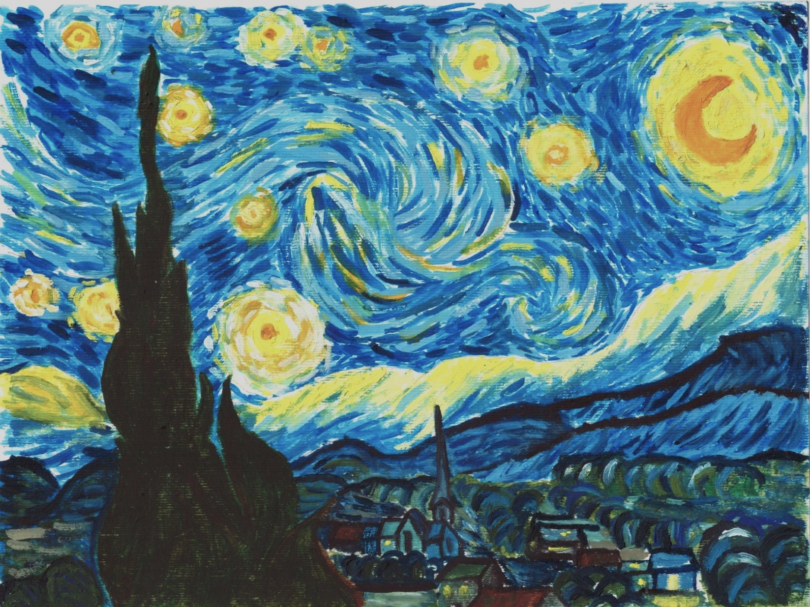
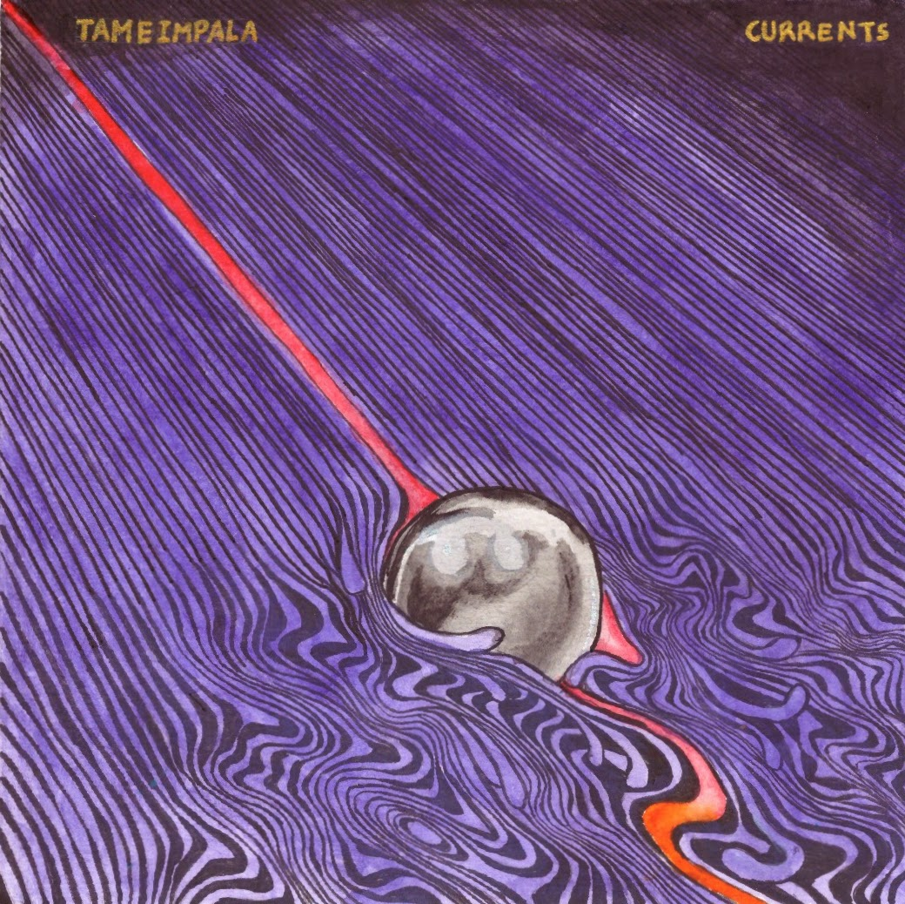
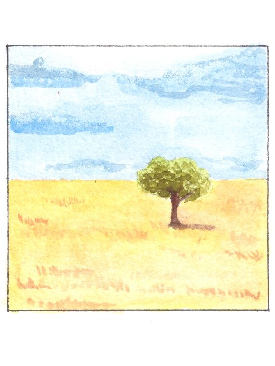
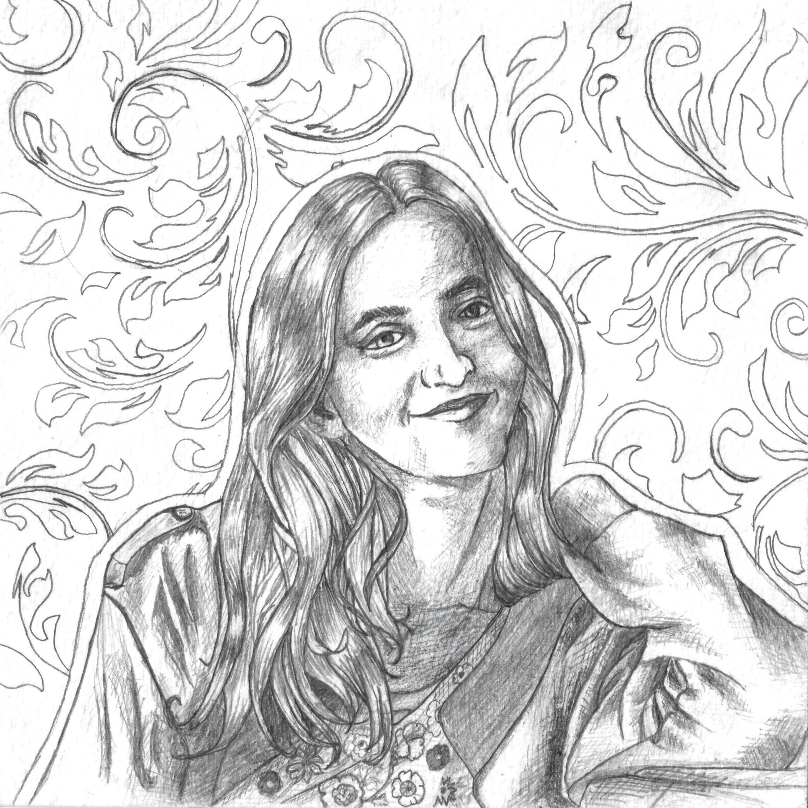

WORK // 001
STARRY NIGHT STUDY
Oil painting · PERSONAL WORK
“I am interested in the things humans leave behind: ideas, cities, borders, paintings, stories, and civilizations.”
NAME BALENDU BHUSHAN PANDEY
STATUS COLLEGE STUDENT
INTERESTS HISTORY
ANTHROPOLOGY
GEOGRAPHY
ART
POLITICS
DESIGN
TECHNOLOGYCivilizations · Revolutions · Memory
Culture · Society · Human behaviour
Maps · Cities · Landscapes · Borders
Painting · Illustration · Visual storytelling
Institutions · Power · Ideas
Interfaces · Visual systems · Communication
Web · Digital tools · Hackathons
Albums · Atmosphere · Sound




A student innovation team built around solving real-world problems through technology, design, and collaborative problem solving.
A speculative future-facing concept exploring how biological systems and infrastructure could interact to create more adaptive, sustainable urban environments.
A startup-style service concept focused on making everyday laundry logistics simpler through a convenient digital experience.
Experiments in HTML, CSS, interface design, visual storytelling, and digital presentation.
Annual school magazine project in which Balendu worked as Chief Editor, bringing together writing, editing, design, school events, contemporary science, history, geography, language, and student work.
History is not simply a record of what happened. It is also the record of what people decided was worth remembering.
Cities are enormous collective experiments. Millions of strangers negotiate space, culture, memory, ambition, and survival every day.
Art is one of the oldest ways humans have tried to make private experiences visible to other people.
Curiosity is often less about finding answers and more about finding better questions.
I tend to become interested in the things that sit between categories: history and geography, technology and design, politics and culture, science and imagination.